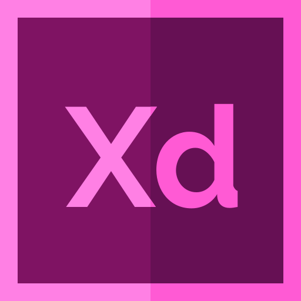
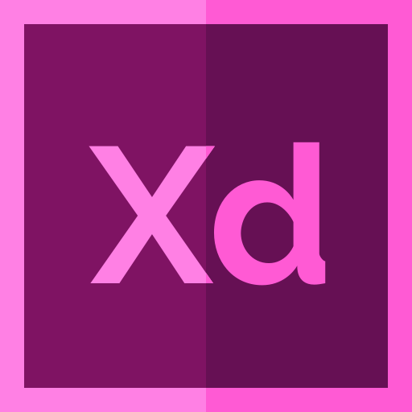
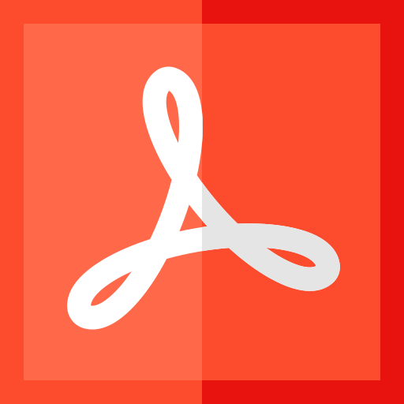
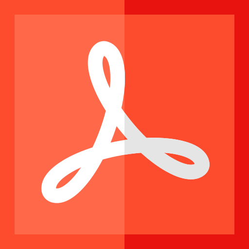

Werdegang
Isabella Aigner ist eine Kommunikationsdesignerin, die sich anfänglich auf Grafik und Design konzentriert hat und einige Jahre auch als Mediendesignerin tätig war. Durch ihre Kreativität wurde jedoch schnell klar, dass ihre Leidenschaft sich auch Richtung Webentwicklung und Multimediadesign ansiedelt, weshalb sie dieses im zweiten Bildungsweg auf der Fachhochschule Oberösterreich (Medientechnik und -design) auch hinzu holt. Isabellas Engagement motiviert sie immer weiter neue Techniken, Technologien und Fähigkeiten zu erlernen, die sie in ihre Arbeit mit einfließen lässt.
Freizeitbildung
Kompetenzen
Im Bereich des Kommunikationsdesigns und der Multimedia-Gestaltung ist es wichtig sich Durchgängig fortzubilden und auf Stand zu halten. Dies ist einerseits eine große Herausforderung, bringt jedoch auch andererseits immer wieder neues und spannendes mit sich, was für Aufträge und Projekte eingesetzt werden kann. Hierbei ist es einersits wichtig bestehende Kompetenzen weiter auszubauen, sowie neue hinzuzufügen. Hierbei bewegen sich meine Kompetenzen vor allem im Bereich Kommunikationsdesign und Multimedia-Produktion.
Betriebssysteme
Windows 10 ,
Mac OSX (aufwärts) 
Sprachen
Deutsch (Muttersprache), Englisch (fließend in Wort und Schrift)
Programme
Adobe CS6/CC


 


 

Web


Programmierung
3D
Audio
Logic, Ableton
Office
Microsoft Office 7 (aufwärts), Open Office, Libre Office
Fachkenntnisse
Grafik & Design
Logoentwicklung, Corporate Design, Print, Webentwicklung, Packaging, Konzeptentwicklung, Produktentwicklung
3D
Sculpting, Modelling, Rigging, Animation
In Ausbau
Motioin Graphics, Mix- & Mastering, Komposition
Soft-Skills
Kommunikation
Kommunikationsfähigkeit, Konfliktlösungsfähigkeit, sehr gute Teamfäigkeit, soziale Sensibilität (Einfühlungsvermögen)
Persönliche Fähigkeiten
Zielstrebiegkeit, Engagement, selbstständige Arbeitsweise, schnelle Auffassungsgabe, kreative Energie und Leidenschaft, gutes räumliches Vorstellungsverögen
Hobbies